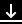

Notera: Nedanstående text är i beta. Partier
som fortfarande behöver bearbetning/uppdatering är markerade med
gult. Kommentarer och förslag mottages gärna
av zrajm@zrajm.org.
Att transkribera teckenspråk
Detta är en introduktion till svensk teckenspråkstranskription, ett
fonematiskt transkriptionssystem för svenskt teckenspråk. Transkriptionen
introducerades av Bergman (1977) och ännu idag (av bland
annat Svenskt teckenspråkslexikon). Över tid har
transkriptionen utvecklats och förändrats, och den här sidan är ett försök
att beskriva systemet i dess helhet, i alla dess olika stadier. (I
praktiken kompletteras ofta transkriptionerna med annan notation för att
beskriva tex mun- och blickrörelser).
Den här texten är tänkt som en introduktion till
teckenspråkstranskription, men på många ställen finns mer detaljerad
information att tillgå. För att visa informationen, klicka på de högerpilar
(▶) som markerar var den finns, eller använd ikonen högst upp till höger på
sidan () för att expandera all information på
en gång.
Transkriptionen delas in i tre olika fält: läge, hand
och rörelse[1]. De kommer alltid
i den ordningen, och vart och ett av fälten har sin egen uppsättning
symboler (lägessymbolerna används bara i lägesfältet etc) med några
undantag. De olika fälten beskrivs i varsitt kapitel nedan.
(Läge) – Beskriver var ett
tecken utförs. (Fältet utelämnas för tecken i neutrala läget.)
Hand – Beskriver aktiva
handen/händernas form och attityd.
Värt att nämna i det här sammanhanget är att den icke-dominanta handen
skrivs i handfältet enbart när det utför rörelse, när den hålls stilla
fungerar den istället som ett läge och skrivs då i lägesfältet. Den enda
skillnaden är på vilken sida man skriver attitydsymbolerna brevid den
icke-dominanta handens symbol. Två aktiva händer skrivs
alltså , medan en aktiv en passiv hand skrivs .
Om en transkription bara har en handbeskrivning så är det ett
enhandstecken. I dessa fall står attitydsymbolerna ([], [] och []
nedan) alltid till höger om handformen. Några exempel på enhandstecken
är välkommen (som utförs i neutrala läget och därför
saknar lägesfält), finns (som har kroppsläge)
och get (med en lite mer komplex rörelse).
När ett tecken utförs med två händer skrivs bägge händerna ut med
egna hand- och attitydsymboler. Den icke-dominanta handen skrivs först,
därefter den dominanta handen, men vilket fält den icke-dominanta
tillhör beror på om den har en passiv eller aktiv roll i tecknet.
Om den icke-dominanta handen är passiv utgör den ett läge för aktiva
handen och tillhör därför lägesfältet. I det fallet skrivs den
icke-dominanta handens attitydsymboler efter handformssymbolen (mellan
de två handsymbolerna):
Om bägge händerna är aktiva och agerar tillsammans så skrivs de två
handformssymbolerna närmare varandra genom att den icke-dominanta
handens attityd skrivs före dess handform. Bägge händerna tillhör då
handfältet:
I sällsynta fall agerar de båda händerna samtidigt, men asymmetriskt
och utan att ha kontakt med varandra. I dessa fall använder man
handseparatorn [] och transkriberar de två händerna var och en
för sig:
Ibland behöver ett tecken delas upp i flera segment för att kunna
transkriberas. Segmentseparatorn [] används för att visa att
segmenten tillhör samma tecken och för vart och ett av segmenten anges
läge, hand och rörelse precis som ovan.
Det finns flera skäl att dela upp ett tecken i flera segment, tex om
tecknet behöver fler än en lägessymbol.
Tecknet pappa delas i två segment därför att de
två lägena skrivs med varsin symbol – man skulle också kunnat skriva
[] men då förloras informationen om exakt var i ansiktet
kontakten sker. (Notera också att hand- och rörelsefälten inte
förkortas på något sätt, även när de är likadana i de båda segmenten.)
Värd är ett tecken som kan
skrivas med bara ett segment trots att det har kontakt vid två olika
lägen (först vänster, sedan höger sida av bröstet).
Ett tecken kan också delas upp i flera segment för att det har flera
distinkta rörelser. – I tecknet tips är det bara
rörelsen som skiljer de två segmenten åt. (I tips är
läget den passiva handen. De kombinerade
rörelsepilarna indikerar diagonal rörelse.)
En annan anledning att dela upp ett tecken i fler segment är att
vilka händer som är aktiva/passiva varierar mellan olika delar av
tecknet. I tecknet människa är läge och handform
densamma i de bägge segmenten men rörelsen skiljer.
Läge (eller artikulationsställe) är den plats där den
aktiva handen befinner sig då ett tecken utförs. Läget kan utgöras av
en passiv hand (med handform och attityd) eller
en plats på kroppen. Vid handläge är den ena
handen är passiv och den andra aktiv. Vid dubbelartikulation är båda
händerna aktiva, och handläge är därför inte möjligt.
Neutrala läget
De allra flesta tecknen i svenskt teckenspråk har neutralt läge.
Detta innebär att de inte tecknas vid en specifik plats på kroppen utan
i det utrymme framför den som tecknar där det är som mest bekvämt att
hålla händerna. Om läget inte skrivits ut i transkriptionen är det det
neutrala läget som avses.
I tecken med handläge (också kallat manuellt läge)
hålls den icke-dominanta handen stilla, och utgör ett läge för den
aktiva handen. Den passiva handen skrivs på samma sätt som en aktiv
hand (med handform och attityd) – se
kapitlet hand.
Eftersom handläget utgörs av en passiv hand innebär det att
dubbelartikulationer (där bägge händerna rör sig) inte kan ha handläge,
och att flesta
av interaktionsartsymbolerna (som
beskriver hur två händer rör sig i förhållande till varandra) inte kan
användas. (Av interaktionsarterna är det
bara hakning [], entré []
och kontakt [] som kan användas för att beskriva
interaktion med en passiv hand.)
När ett tecken har två aktiva händer agerar de ofta på var sin sida
om kroppen, i dessa lägen använder man en dubblerad kroppslägessymbol
([], [], [], [], [] eller []):
Kroppslägen i tecken med en aktiv och en passiv hand är ovanliga,
men förekommer.
Notera dock att när kontakt [] används i de
här tecknen är det svårt att veta exakt vad som har kontakt med vad – i
lexikon (december 2018) har samtliga tecken kontakt mellan den passiva
handen och kroppsläget, men det varierar hurvida den aktiva handen har
kontakt med kroppsläget:
Underarmen [] är unik i det att det är det enda
kroppsläge som används med attitydsymboler. (När underarmen används som
läge har handformen på samma arm ingen betydelse.)
Bergman (1977 och 1982) använder
olika lägessymboler för huvudet beroende på om ett tecken
har kontakt eller inte. För tecken utan kontakt
används ansiktet [], övre delen av ansiktet []
eller nedre delen av ansiktet []. För tecken med kontakt
används istället det mer specifika lägena hjässan
[], pannan [], örat [], kinden
[], näsan [], munnen [] eller hakan []. Denna
princip har dock frångåtts av senare teckenspråksforskare (exakt när
det skett är inte klart för denna skribent i skrivande stund) och
används inte av Svenskt teckenspråkslexikon (2008).
Bergman (1977)
De hittills redovisade lägeskiremen [hjässan, pannan, örat, kinden,
munnen och hakan] är samtliga höga lägen, alla lokaliserade till
huvudet. De förekommer i tecken som har en artikulation som innebär
kontakt med stället i fråga och det gör de exakta lägena
jämförelsevis lättobserverade. I de tecken som är lokaliserade till
huvudet, men som saknar kontakt i sin artikulation, utnyttjas inte
så små distinktioner. För deras beskrivning fordras bara tre
huvudlägeskirem: hela ansiktet, övre ansiktshalvan och nedre
ansiktshalvan. De kontrasterar såväl inbördes som mot de övriga
ansiktslägena. (Bergman, 1977: 54)
Lägena i huvudhöjd har (med undantag av näsan) rundade symboler;
övriga har rätvinkliga symboler. Vidare förekommer två olika
storlekar bland lägessymbolerna. Följande symboler är stora (lika
höga som handformssymbolerna sid 8): , , , , , , , , , ,
. De övriga är bara hälften så stora och har samma höjd som
attityd- och artikulationssymbolerna. Dessa små lägessymboler
skrivs ”på raden” men fyra av dem har kommit att skrivas i en högre
position: , , , .
Underarmen saknar egen symbol men transkriberas med armens
symbol följd av attitydsymbolerna.
, och används för tecken vars artikulation saknar kontakt.
Symboler för de lägen vilka utgörs av den ena kroppsdelen i ett par
kan vid behov dubbelskrivas med motsvarande spegelvända symbol: ,
, , , , ,
. (Bergman, 1982: 7–8)
Notera: De (högst osannolika) dubbleringarna
och omnämns
inte i några andra källor (och även här ges inga konkreta exempel på
tecken i vilka de ingår). De har därför inte upptagits i listan
nedan.
Här finns bara en kortfattad beskrivning i tabellform
(Hedberg, 1989: 59–63, Appendix B). Inga dubblerade
lägen omnämns (i varken brödtext eller referenstabell). Symbolen
för vänstra axeln [] användes för första gången i
transkription (Hedberg, 1989: 34).
Lägena i huvudhöjd har (med undantag av näsan) rundade symboler;
övriga har rätvinkliga symboler. Vidare förekommer två olika
storlekar bland lägessymbolerna. Följande symboler är stora (lika
höga som handformssymbolerna:
.
De övriga är bara hälften så stora och har samma höjd som
attityd- och artikulationssymbolerna. Dessa små lägessymboler
skrivs ”på raden” men fyra av dem har kommit att skrivas i en högre
position: . Underarmen transkriberas följd av
attitydsymbolerna.
och används för tecken vars artikulation saknar kontakt.
Symboler för de lägen vilka utgörs av den ena kroppsdelen i ett par
kan vid behov dubbelskrivas med motsvarande spegelvända symbol:
. (Bergman & Björkstrand, 1993: 5,
formuleringen extremt lik Bergman, 1982: 8)
Nedan följer en lista över lägessymbolerna och deras betydelse.
Använd filterfunktionen om du vill se symboler från en specifik källa
eller med en specifik egenskap.
Neutrala läget (utan symbol)
För tecken i neutrala läget skrivs ingen lägessymbol ut. I de
fallen står handfältet först i transkriptionen.
Det neutrala läget är området framför kroppen där händerna
lättast befinner sig när armarna är böjda i armbågarna.
Bergman (1977)
I du och teckna används
ett mycket vanligt artikulationsställe, som fått beteckningen
det neutrala artikulationsstället. Det är alltså inte någon
del av kroppen, utan det område framför kroppen där händerna
rör sig lätt och naturligt. Detta läge är inte exakt
avgränsat och händernas placering inom detta varierar, t ex
beroende på om man sitter eller står. (Bergman,
1977: 34)
Det neutrala läget har redan omnämnts i samband med
t ex aspektbeskrivningen i detta kapitels inledning. Neutrala
läget är alltså hela området framför kroppen där händerna rör
sig naturligt. Det begränsas uppåt ungefär i höjd med
axlarna, där det redan omnämnda lägeskiremet ansiktet vidtar.
— Det är i detta område den vänstra handen befinner sig när
den fungerar som artikulationsställe. Det neutrala
lägeskiremet ’neutraliseras’ då av den vänstra handen som så
att säga övertar aspektfunktionen artikulationsställe.
(Bergman, 1977: 56–57)
Artikulationsstället slutligen är det läge vid vilket
artikulatorn agerar. Det är antingen någon del av kroppen
eller det neutrala läget, vilket är området framför den
tecknandes kropp där händerna med lätthet artikulerar när
armarna är böjda i armbågarna. (Bergman, 1982:
4)
Om artikulationsstället är det neutrala läget sätts ingen
symbol ut. I sådana tecken, vilka är vanliga, kommer alltså
artikulatorsbeskrivningen att stå först.
(Bergman, 1982: 12)
Används till både en- och tvåhandstecken.
Bergman (1977)
Ansiktet har två varianter. Den ena utnyttjas i tecken
som sol och är påtagligt nära ansiktet,
medan den andra varianten inte har samma närhet till
ansiktet. Den är mera antydningsvis orienterad till huvudet
eller vid sidan av huvudet. I teckenböckernas beskrivningar
av tecken med detta artikulationsställe kallas det ofta ’i
huvudhöjd’, vilket markerar att det är skilt från det
(lägre) neutrala artikulationsstället.
(Bergman, 1977: 54)
Används till både en- och tvåhandstecken.
Bergman (1977)
Övre ansiktet är ett läge i höjd med pannan och
ögonen, medan nedre ansiktet är mera i nivå med munnen
och hakan. I informellt tecknande kan båda lägena förskjutas
nedåt, så att tecken med övre läget realiseras i munhöjd,
medan de med nedre läget realiseras i brösthöjd — men med
bibehållen distinktion mellan ett högre och ett lägre ställe.
(Bergman, 1977: 54)
Används till både en- och tvåhandstecken.
Bergman (1977)
Övre ansiktet är ett läge i höjd med pannan och
ögonen, medan nedre ansiktet är mera i nivå med munnen
och hakan. I informellt tecknande kan båda lägena förskjutas
nedåt, så att tecken med övre läget realiseras i munhöjd,
medan de med nedre läget realiseras i brösthöjd — men med
bibehållen distinktion mellan ett högre och ett lägre ställe.
(Bergman, 1977: 54)
Används till både en- och tvåhandstecken.
Bergman (1977)
Hjässan som lägeskirem utgörs av hela överdelen av
huvudet fram till och med hårfästet. Hjässan förekommer
endast i ett litet antal tecken. (Bergman,
1977: 52)
Används till både en- och tvåhandstecken.
Bergman (1977)
Pannan tar vid där hjässan slutar och omfattar även
ögonbrynen, som alltså inte är ett eget lägeskirem. Pannan
tillskrivs traditionellt en viss betydelseladdning då tecken
som uttrycker någon form av intellektuell verksamhet (eller
avsaknaden av sådan) väljer pannan som lägeskirem. Bland dem
finns veta, tänka,
klok, dum,
korttänkt. Alla tecken som har läget
pannan, har givetvis inte denna betydelsekomponent
(läder, gammal,
bonde). (Bergman, 1977:
52)
Symboler för de lägen vilka utgörs av den ena kroppsdelen i
ett par kan vid behov dubbelskrivas med motsvarande
spegelvända symbol: , , , , ,
, . (Bergman, 1982:
8)
Notera: De (högst osannolika) dubbleringarna
och
omnämns inte i några andra källor (och även här ges inga
konkreta exempel på tecken i vilka de ingår). De har därför
inte tagits med i den här listan.
Symboler för de lägen vilka utgörs av den ena kroppsdelen i
ett par kan vid behov dubbelskrivas med motsvarande
spegelvända symbol: . (Bergman &
Björkstrand, 1993: 5, beskrivning identisk
med Bergman, 1982)
Bland lägeskiremen skiljer sig kinden, örat och axeln från de
övriga genom att de dubbleras i tecken som har dubbel
artikulator. För tydlighetens skull kan detta visas i
skriften genom att lägessymbolen fördubblas (jfr
med bo som har höger kind — om det är en
högerhänt som tecknar): gråta
(Bergman, 1977: 83–84)
Örat som kirem är inte bara själva örat, utan hela
sidan av huvudet. Det säger sig självt att tecken som till
sin innebörd kan knytas till hörselsinnet (och dess frånvaro)
gärna [är] placerat vid örat: höra,
döv, lyssna,
ljud. (Bergman, 1977: 52)
Symboler för de lägen vilka utgörs av den ena kroppsdelen i
ett par kan vid behov dubbelskrivas med motsvarande
spegelvända symbol: , , , , ,
, . (Bergman, 1982:
8)
Notera: De (högst osannolika) dubbleringarna
och
omnämns inte i några andra källor (och även här ges inga
konkreta exempel på tecken i vilka de ingår). De har därför
inte tagits med i den här listan.
Symboler för de lägen vilka utgörs av den ena kroppsdelen i
ett par kan vid behov dubbelskrivas med motsvarande
spegelvända symbol: . (Bergman &
Björkstrand, 1993: 5, beskrivning identisk
med Bergman, 1982)
Örat som kirem är inte bara själva örat, utan hela
sidan av huvudet. Det säger sig självt att tecken som till
sin innebörd kan knytas till hörselsinnet (och dess frånvaro)
gärna [är] placerat vid örat: höra,
döv, lyssna,
ljud. (Bergman, 1977: 52)
Bland lägeskiremen skiljer sig kinden, örat och axeln från de
övriga genom att de dubbleras i tecken som har dubbel
artikulator. För tydlighetens skull kan detta visas i
skriften genom att lägessymbolen fördubblas (jfr
med bo som har höger kind — om det är en
högerhänt som tecknar): gråta
(Bergman, 1977: 83–84)
Kinden är kanske ett av de mer ointuitiva lägeskiremen
så tillvida att det omfattar flera delar av ansiktet: kind,
tinning, öga och näsa, dvs nästan hela partiet mellan pannan
och munnen. Några tecken som spontant tillskrivs läget ögonen
har egentligen kinden som ställe, gråta är
ett sådant exempel. Vi vet att tårarna kommer från ögonen, så
som tecknets form anger, men vad fingrarna visar i tecknet är
hur tårarna rinner ned utefter kinderna. — Lägeskiremet
kinden är ett exempel på det som tidigare diskuterades,
nämligen att trots att man kan identifiera flera olika
ansiktspartier med egna benämningar kan de inte skiljas åt
som kirem. De kontrasterar mot de övriga lägena men inte
inbördes. (Bergman, 1977: 52)
Notera: I strid med ovan beskrivning så
existerar näsan som eget läge
i Bergman (1977).
Symboler för de lägen vilka utgörs av den ena kroppsdelen i
ett par kan vid behov dubbelskrivas med motsvarande
spegelvända symbol: , , , , ,
, . (Bergman, 1982:
8)
Notera: De (högst osannolika) dubbleringarna
och
omnämns inte i några andra källor (och även här ges inga
konkreta exempel på tecken i vilka de ingår). De har därför
inte tagits med i den här listan.
Symboler för de lägen vilka utgörs av den ena kroppsdelen i
ett par kan vid behov dubbelskrivas med motsvarande
spegelvända symbol: . (Bergman &
Björkstrand, 1993: 5, beskrivning identisk
med Bergman, 1982)
Kinden är kanske ett av de mer ointuitiva lägeskiremen
så tillvida att det omfattar flera delar av ansiktet: kind,
tinning, öga och näsa, dvs nästan hela partiet mellan pannan
och munnen. Några tecken som spontant tillskrivs läget ögonen
har egentligen kinden som ställe, gråta är
ett sådant exempel. Vi vet att tårarna kommer från ögonen, så
som tecknets form anger, men vad fingrarna visar i tecknet är
hur tårarna rinner ned utefter kinderna. — Lägeskiremet
kinden är ett exempel på det som tidigare diskuterades,
nämligen att trots att man kan identifiera flera olika
ansiktspartier med egna benämningar kan de inte skiljas åt
som kirem. De kontrasterar mot de övriga lägena men inte
inbördes. (Bergman, 1977: 52)
Notera: I strid med ovan beskrivning så
existerar näsan som eget läge
i Bergman (1977).
Här och Hedberg (1989) är de enda källor
där symbolen för högra kinden [] bara är halvhöjd (och
inte fullhöjd som i Bergman, 1977, och övriga
senare källor). Denna halvhöjdsvariant av symbolen är till
förväxling lik attitydsymbolen vänstervriden [ ].
Här och Bergman (1982) är de enda källor
där symbolen för högra kinden [] bara är halvhöjd (och
inte fullhöjd som i Bergman, 1977, och övriga
senare källor). Denna halvhöjdsvariant av symbolen är till
förväxling lik attitydsymbolen vänstervriden [ ].
Munnen är inte bara läpparna utan också mungiporna och
litet av området omkring munnen. Något enstaka tecken
utnyttjar tänderna som läge, men kirematiskt sett är de
endast en variant till lägeskiremet munnen. I tecken där
artikulatorn skall ha kontakt med själva munnen kan en
tecknande ses sänka handen något, så att den i stället
placeras nedanför munnen. Det beror i regel på att man inte
vill att munnen skall vara skymd, då det förhindrar
avläsningen av det samtidigt uttalade ordet.
(Bergman, 1977: 52–54)
Hakan är trots närheten till munnen ett eget kirem.
Det kan tyckas märkligt att mun och haka kan skiljas åt när
exv inte de olika varianterna av läget kinden är olika kirem,
men ett teckenpar som avläsa (mun- eller
läppavläsning) och jude visar tydligt hur
mun och haka kontrasterar […]. (Bergman, 1977:
54)
Halsen har två varianter, dels framsidan av halsen med
struphuvudet och dels sidan av halsen. Den högerhänte
använder normalt den högra sidan. (Bergman,
1977: 54)
Bland lägeskiremen skiljer sig kinden, örat och axeln från de
övriga genom att de dubbleras i tecken som har dubbel
artikulator. För tydlighetens skull kan detta visas i
skriften genom att lägessymbolen fördubblas (jfr
med bo som har höger kind — om det är en
högerhänt som tecknar): gråta
(Bergman, 1977: 83–84)
Axlarna förekommer bara i ett litet antal tecken. I tecken
med enkel artikulator används såväl vänster som höger
axel, men inget tecken har belagts där båda axlarna
utnyttjas. När så är fallet, har tecknen alltid dubbel
artikulator. Axlarnas lägeskirem är två (inte tre som för
bröstet): höger axel och vänster axel. Valet av
axel är i tecknad svenska inte lämnat till den enskilde
teckenanvändaren utan är alltid givet för varje tecken.
(Bergman, 1977: 56)
Symboler för de lägen vilka utgörs av den ena kroppsdelen i
ett par kan vid behov dubbelskrivas med motsvarande
spegelvända symbol: , , , , ,
, . (Bergman, 1982:
8)
Notera: De (högst osannolika) dubbleringarna
och
omnämns inte i några andra källor (och även här ges inga
konkreta exempel på tecken i vilka de ingår). De har därför
inte tagits med i den här listan.
Symboler för de lägen vilka utgörs av den ena kroppsdelen i
ett par kan vid behov dubbelskrivas med motsvarande
spegelvända symbol: . (Bergman &
Björkstrand, 1993: 5, beskrivning identisk
med Bergman, 1982)
Axlarna förekommer bara i ett litet antal tecken. I tecken
med enkel artikulator används såväl vänster som höger
axel, men inget tecken har belagts där båda axlarna
utnyttjas. När så är fallet, har tecknen alltid dubbel
artikulator. Axlarnas lägeskirem är två (inte tre som för
bröstet): höger axel och vänster axel. Valet av
axel är i tecknad svenska inte lämnat till den enskilde
teckenanvändaren utan är alltid givet för varje tecken.
(Bergman, 1977: 56)
Axlarna förekommer bara i ett litet antal tecken. I tecken
med enkel artikulator används såväl vänster som höger
axel, men inget tecken har belagts där båda axlarna
utnyttjas. När så är fallet, har tecknen alltid dubbel
artikulator. Axlarnas lägeskirem är två (inte tre som för
bröstet): höger axel och vänster axel. Valet av
axel är i tecknad svenska inte lämnat till den enskilde
teckenanvändaren utan är alltid givet för varje tecken.
(Bergman, 1977: 56)
Symbolen används för både över- och underarm.
När överarmen avses skrivs den utan attityd, och
när underarmen avses skrivs den med attityd.
’Armen’ är inte ett eget kirem enligt analysen utan
två olika kirem, överarmen och underarmen. Men det räcker med
en gemensam symbol för dem eftersom underarmen till skillnad
från överarmen alltid måste ha attitydbeskrivning och
därigenom kan inte förväxling ske. (Bergman,
1977: 81)
’Armen’ är inte ett eget kirem enligt analysen utan
två olika kirem, överarmen och underarmen. Men det räcker med
en gemensam symbol för dem eftersom underarmen till skillnad
från överarmen alltid måste ha attitydbeskrivning och
därigenom kan inte förväxling ske. (Bergman,
1977: 81)
Följs av attitydsymboler (på samma sätt som en passiv
hand).
Bergman (1977)
Omnämns som artikulationsställe, men har ingen egen symbol.
Skrivs med armen [] plus
attitydsymboler.
Underarmen omfattar även handleden. Underarmen
skiljer sig från de övriga kroppslägeskiremen genom att den
är rörlig och kan hållas på flera olika sätt — den kräver
attitydbeskrivning. Av riktningarna är bara fram, upp och
vänster belagda medan vridningen som beskrivs med referens
till armens insida, visar större variation. Underarmen som
ställe måste alltså alltid kompletteras i teckenbeskrivningen
med attitydangivelse till skillnad från överarmen som i sin
funktion av artikulationsställe inte behöver det.
I tecken med underarmen som lägesbeskrivning intar handen
alltid en omarkerad form, dvs den är helt avslappnad och har
ingen funktion i tecknet. (Bergman, 1977:
56)
’Armen’ är inte ett eget kirem enligt analysen utan
två olika kirem, överarmen och underarmen. Men det räcker med
en gemensam symbol för dem eftersom underarmen till skillnad
från överarmen alltid måste ha attitydbeskrivning och
därigenom kan inte förväxling ske. (Bergman,
1977: 81)
Bröstet är partiet mellan halsen och mellangärdet. I
tecken med enkel artikulator placeras handen mitt på
bröstet, men för tecken med dubbel artikulator krävs ett
större utrymme om båda händerna skall artikulera samtidigt.
Dessa teckens utförande tar då båda sidorna av bröstet
i anspråk. Tecknen skön
och bada […] illustrerar de två varianterna
av bröstet. (Bergman, 1977: 54)
Vänster sida av bröstet eller hjärtat är
dessutom ett eget lägeskirem, trots att den också ingår som
en del av föregående kirems varianter (som dock var betingad
av dubbel artikulator). En hand som spretas uppåt på vänster
sida av bröstet ger tecknet förtjust. Om
detta ställe utbyts mot (mitt på) bröstet betyder det i
stället förkyld. (Bergman,
1977: 54–56)
Höger sida av bröstet fungerar också den som ett eget
kirem. Att vänster sida gör det, skulle kunna förklaras av
att hjärtat attraherar en del teckens val av ställe, men
förekomsten av den högra sidan som lägeskirem kan inte
förklaras med hänvisning till något speciellt organ eller
någon viss kroppsdel. Hur höger sida kontrasterar mot vänster
sida visar tecknen konsulent
och minister […], och skillnaden mellan
bröstet och höger sida demonstreras av skön
och fattig (Bergman, 1977:
56)
Magen har valts som beteckning för ett lägeskirem som
rymmer många varianter som alla är olika kroppsdelar:
mellangärdet, magen, midjan, höften — till och med låren och
benen ingår här. Det korrekta utförandet av
tecknet hund är en klappande rörelse mot
låret. Men om den tecknande sitter eller syns endast till en
del av någon annan anledning antyds endast detta läge och
handen klappar mot ett tänkt ben i midjehöjd. Tecknet
uppfattas ändå som hund. Det har inte varit
möjligt att hitta några kontrasterande teckenpar inom denna
jämförelsevis heterogena grupp, som dock utåt gentemot de
andra lägeskiremen fungerar som en enhetlig uppsättning, i
och med att de kontrasterar mot dessa lägen.
(Bergman, 1977: 56)
Symboler för de lägen vilka utgörs av den ena kroppsdelen i
ett par kan vid behov dubbelskrivas med motsvarande
spegelvända symbol: , , , , ,
, . (Bergman, 1982:
8)
Notera: De (högst osannolika) dubbleringarna
och
omnämns inte i några andra källor (och även här ges inga
konkreta exempel på tecken i vilka de ingår). De har därför
inte tagits med i den här listan.
Symboler för de lägen vilka utgörs av den ena kroppsdelen i
ett par kan vid behov dubbelskrivas med motsvarande
spegelvända symbol: . (Bergman &
Björkstrand, 1993: 5, beskrivning identisk
med Bergman, 1982)
Symbolerna är ordnade uppifrån och ner, med de lägen som
vanligtvis inte involverar kontakt först i tabellen.
Eventuellt dubblerade kroppslägen
i Wallin (1994) nämns inte i bokens appendix och
är inte (än) markerade ovan.
I beskrivningen av transkriptionssystemet
i Bergman (1982) beskrivs
även armen () och överarmen () som
dubbleringsbara, men möjligheten till tvåhandstecken som har
bägge armarna som läge torde vara begränsat, och jag har aldrig
sett någon verklig transkription som använder sig av detta, så
dessa varianter har utelämnats här. (Dubblerade varianter av
armen eller överarmen omnämns inte heller i någon annan
källa.)
I Hedberg (1989) finns inga
dubblerade former förutom bröstet () (varken i text eller
symbolförklaring). Sannolikt detta ett resultat av att
persontecken oftast är enhandstecken (snarare än att Hedberg
skulle försökt undvika använda dubblerade symboler).
Minnesregel: Alla rundade symboler utom näsan ()
är på huvudet, medan symboler med räta vinklar i sig är på
kroppen.
Relationssymboler
Relationsymbolen skrivs ovanför symbolen för läget/sekundära
handen och indikerar var den primära handen befinner sig. Dvs att
om symbolen ovanför (◌) används så befinner sig den
primära handen ovanför den andra handen/läget.
Då ingen relationssymbol skrivits ut beror den primära handens
placering på om det är ett tecken med dubbelartikulation,
kroppsläge eller manuellt läge. Vid kroppsläge är
relationen vid om ingen relationssymbol används,
vid dubbelartikulation är den bredvid och
vid manuellt läge agerar den aktiva handen vid den passiva
handens handflata, dvs den passiva handens attitydvridning avgör
relationen (om den passiva handen är uppåtvriden så är
relationen ovanför).
Artikulatorn innefattar handform och attityd
(handflatans riktning och vridning).
Ett tecken kan utföras med en eller två händer. I de fall två
händer används kan den icke-dominanta handen antingen hållas stilla
(i så fall utgör den ett artikulationsställe,
enligt ovan) eller röra sig tillsammans med den dominanta handen (i
så fall är den en artikulator, såsom beskrivet här).
Artikulatorn består av en eller två händer.
Exempel med enkel artikulatorExempel med dubbel artikulator
A-handen är [liksom vinkelhanden] också böjd i enbart
den inre knogen. Fingrarna är samlade. Tummen är motställd de
övriga fingrarna och är i kontakt med fingertopparna.
A-handen kan även kallas sluten hand, men så som ordet
används här är även O-handen en sluten hand.
(Bergman, 1977: 45)
A-handen utgörs av att fingrarna samlad form är böjda i inre
knogen. Tummen är motställd fingrarna och är vanligtvis
kontakt med pek- och långfingrarnas flatsida vid ytterknogen.
(Wallin, 1994: 125)
NA-handen
Den här symbolen används inte längre – idag används
(lilla O-handen) istället. Symbolen beskrivs i följande
källor:
Hedberg (1989)
Tumvinkelhanden liknar A-handen men öppningsgraden mellan
tummen och fingertopparna är mer markerad. Ibland kan
fingrarna vara något böjda i yttre knogarna.
(Wallin, 1994: 125)
Den vinklade handen är böjd i den inre
men inte i den yttre knogen. Fingrarna är samlade. Tummen
ligger normalt upp mot pekfingrets inre knoge. Man kan ibland
se att den också kallas kupad hand. (Bergman,
1977: 45)
Ett enda drag skiljer också den flata handen från den
vinklade som är böjd i den inre knogen.
(Bergman, 1977: 41)
Den vinklade handens bokstav är ett uppochnervänt V.
(Bergman, 1977: 80)
Måtthanden formas av tummen och pekfingret som båda är
böjda i yttre knogen. Tummen är motställd pekfingret (jfr
klohanden). I samband med artikulationstypen
förändringsrörelse (se s 66) uteblir böjningen i yttre
knogen. (Bergman, 1977: 47)
utgörs av att pekfingret och tummen hålls motställda varandra
med en öppningsgrad emellan. Någon fix öppningsgrad kan
svårligen förutbestämmas men snapsglasstorlek är
normalfall. Pekfingret är vanligen böjt i främst inre knogen.
Men viss böjning i mellanknogen och yttre leden förekommer
också. Raka måtthanden förekommer också i två varianter som
allomorfer. Dels hålls övriga fingrar knutna, dels raka och
spretade. Det finns en tredje allomorf. Den utgörs också av
pekfingret och tummen med tillägget att långfingret hålls
intill pekfingret (jfr. N-måtthand, 7.22).
(Wallin, 1994: 129)
Vinklade tupphanden
Den här symbolen används inte längre – idag används
(tupphanden) istället.
Hedberg (1989)
Nyphanden skiljer sig från måtthanden genom att tummen
och pekfingret här etablerat kontakt med varandra. De bildar
antingen en spets (jfr A-handen) eller en liten ring (jfr
O-handen). (Bergman, 1977: 47)
[Den] grekiska bokstaven […] delta avbildar den spets som
tummen och pekfingret bildar i nyphanden.
(Bergman, 1977: 80)
Nyphanden utgörs av pekfingret och tummen som vanligtvis är i
kontakt med varandra vid fingerdynorna. Nyphanden förekommer
i två varianter som allomorfer. Dels hålls övriga fingrar
knutna, dels [för stor nyphand] utsträckta och spretade.
Det är oklart om pekfingret i Wallins nyphand () alltid är
vinklat, eller om det också kan vara böjt. Vad det gäller stora
nyphanden så skiljer han på stora nyphanden () och böjda stora
nyphanden (), men
ingen liknande distinktion görs för nyphanden.
Lilla O-handen
Används istället för NA-handen, och böjda
N-handen/NO-handen.
(Beskrivning saknas)
E-handen
Symbolen introducerades 1982.
Bergman (1977) inkluderar inte
”” E-handen i transkriptionen, men handformen avbildas i
handalfabetet (figur 9, sidan 32) och omnämns som ”handalfabetets
bokstav e” i en diskussion om ordningstal (sidan 45).
Bergman (1982: 25)
Den knutna handen är böjd i inre och yttre knogarna
så långt att fingertopparna ligger i kontakt med handflatan.
Tummen ligger över de krökta fingrarna i grundformen.
Variant: ’hållhanden’ som skiljer sig från den äkta
knutna formen genom att tummen ligger mot pekfingrets sida
(ungefär samma form som handen har när man håller i en
nyckel). (Bergman, 1977: 45)
Knuten hand utgörs av att fingrarna är böjda i inre och yttre
knogarna så mycket att fingertopparna har kontakt med
handflatan. Tummen ligger över de krökta pek- och
långfingrarna. (Wallin, 1994: 123)
Den stora nyphanden bildas som nyphanden med den
skillnaden att de övriga fingrarna inte är knutna utan helt
raka och spretade. Den är således det enda undantaget från
regeln om att fingerhandformerna har en knuten grundform. Som
variant förekommer handalfabetets H-hand (se figur 9, s 32).
(Bergman, 1977: 47)
Nyphanden [] utgörs av pekfingret och tummen som vanligtvis
är i kontakt med varandra vid fingerdynorna. Nyphanden
förekommer i två varianter som allomorfer. Dels hålls övriga
fingrar knutna, dels utsträckta och spretade.
(Wallin, 1994: 124)
Flyghanden utgörs av tummen och lillfingret och har
sitt namn efter ett av de få tecken den förekommer i.
Fingrarna är oböjda.
Variant: hos några personer kan i en del teckens utförande
en variant iakttas som i stället för tummen har pekfingret.
(Bergman, 1977: 46)
Flyghanden […] har som grundelement [ett] I […] till vilka
har fogats ett tvärstreck. Detta kan om man vill tolkas som
symbol för tummen, som är det enda drag som skiljer […]
flyghanden från I-handen. (Bergman, 1977:
80)
Den flata handen är en rak hand utan böjning i
knogarna. Fingrarna är samlade. Tummen är inte ett
distinktivt drag i den här handformen och förekommer i olika
positioner. Den mest avspända varianten får lätt något
åtskilda fingrar och kan för smidighetens skull också ha en
viss böjning i knogarna.
Den flata handen är en mycket utnyttjad handform som lika
gärna skulle kunna kallas ’handen’. Dess mest
utmärkande drag är att den inte intagit någon särskild
form, men som sådan står den ändå i kontrast till alla andra
former.
Variant: vid tecken med artikulationen hakning eller
mottagning (se s 70, 72) ligger tummen indragen över
handflatan innan den utför rörelsen som innebär att den
griper tag i den andra handen och håller i denna mellan
fingrarna och tummen. (Bergman, 1977:
41–45)
Pekfingret är rakt, men kan i enstaka tecken böjas i
den inre knogen om artikulationen därigenom underlättas.
Pekfingret är vid sidan av den flata handen den mest
frekventa handformen. Det kan delvis förklaras av att många
tecken till sitt ursprung är pekningar
(du, jag, upp,
ner, gud m fl). Den här
handformen kan också ibland ha en viss betydelseladdning
och är vanlig i tecken med
betydelsekomponenten ’en’, ’ensam’.
(Bergman, 1977: 46)
utgörs av pekfingerhanden med utsträckt pekfinger utan
böjning i inre knogen. Den har också en allomorf, vinklad
pekfingerhand med fingret böjt i inre knogen. Allomorfen är
artikulatoriskt betingad, t ex när pekfingerändan är riktad
bakåt vid örat som i tecknet betecknande ’penna sitter bakom
örat’ (Wallin, 1994: 105)
Vinklade pekfingret
Symbolen introducerades 1982 och användes fram till 1994. Idag
används ”” pekfingret istället.
Bergman (1982: 25)
Finns det en bild eller beskrivning av
handformen i Wallin (1994)? Isf infoga
den/dem här.
L-handen
Symbolen introducerades 1982.
Bergman (1977) betraktade denna handform som
en variant av ”” T-handen och använde termen ”L-handen”
som en synonym till pekfingret (sidan 149).
Bergman (1982: 26)
M-handen kan ses som omvändningen av flyghanden. I den
här handformen är det handens tre mellersta fingrar som utgör
formen, medan tummen och lillfingret ligger ’knutna’ in över
handflatan. Fingrarna är företrädesvis samlade. Detta är den
enda formen av fingerkonfigurationerna där ringfingret
deltar aktivt i formens bildande. (Bergman,
1977: 46)
O-handen är böjd i inre och yttre knogarna, men endast
så mycket att tummen och fingertopparna skall kunna etablera
kontakt för att en cirkelform skall bildas. O-handen är i
motsats till både S-handen och klo-handen en sluten handform
och kontakten mellan fingertopparna och tummen är det enda
draget som skiljer O-handen från dem. I O-handen finns en
spretning antydd, men fingrarna kan också vara samlade.
(Bergman, 1977: 45)
’hållhanden’ […] skiljer sig från den äkta knutna
formen genom att tummen ligger mot pekfingrets sida (ungefär
samma form som handen har när man håller i en nyckel).
(Bergman, 1977: 45)
S-handen är rak i de inre knogarna men böjd i de
yttre. Fingrarna är samlade och tummen är motställd dessa.
Handen är öppen, dvs kontakt mellan tummen och fingertopparna
förekommer inte. (Bergman, 1977: 45)
S-handen utgörs av att fingrarna är raka i inre knogarna och
samlade men böjda i mellanknogarna och yttersta leden. Tummen
är motställd fingrarna. (Wallin, 1994: 111,
128)
Klo-handen är rak i de inre knogarna men böjd i de
yttre. Fingrarna är spretade — det enda draget som skiljer
den från S-handen. Liksom den spretade handen (med raka
fingrar) utmärks klo-handen av spändhet jämfört med sin
samlade motsvarighet, i det här fallet alltså en avspänd,
mindre samlad variant av S-handen. (Bergman,
1977: 45)
För klohanden används grekiska bokstaven sigma […]
(Bergman, 1977: 80)
Klohanden utgörs av att fingrarna är spretade och raka i inre
knogarna men böjda i mellanknogarna och yttersta leden. Hur
mycket fingrarna är böjda varierar. När handformen etablerar
kontakt med tex. bröstet sträcks fingrarna gärna ut så att
kontakten etableras mitt på fingertopparna och inte vid
nagelområdet. (Wallin, 1994: 109, 126)
T-handen
Symbolen introducerades 1977 men inkluderade då också det vi
idag kallar ”” L-handen. 1982 fick den sin nuvarande
betydelse.
Bergman (1977)
Notera: Den första, raka, handformen beskriven nedan
kallas idag ”” L-handen.
T-handen bildas av tummen och pekfingret […]. Båda är
raka och bildar tillsammans en rät vinkel. Den har fått sitt
namn efter den variant som används i initialtecken (med
handalfabetets T som artikulator).
I varianten är pekfingret böjt i inre knogen och tummen vilar
mot densamma (Bergman, 1977: 46)
Dubbelkroken formas av
pek- och långfingret som böjts i den yttre knogen. Det är
denna böjning som skiljer den från N- och V-händerna.
Fingrarna kan vara spretade eller samlade.
(Bergman, 1977: 46)
Böjda tupphanden utgörs av tummen, pekfingret och långfingret
som är spretade från varandra och raka i inre knogarna samt
böjda i mellanknogarna och yttersta leden.
(Wallin, 1994: 109, 127)
V-handen utgörs också av pek- och långfingret, men
dessa är i den här [till skillnad från N-handen] formen
spretade. Den har ibland en viss semantisk laddning
motsvarande ’två’, ’dubbel’ och används t ex i tecknen
TVÅ, BÅDA, ELLER. (Bergman, 1977: 46)
Tupphanden består […] av tre fingrar:
tummen, pekfingret och långfingret. De är oböjda och spretar
från varandra. (Bergman, 1977: 46)
[…] tupphanden har som grundelement [ett] V […] till vilk[et]
har fogats ett tvärstreck. Detta kan om man vill tolkas som
symbol för tummen, som är det enda drag som skiljer
tupphanden från V-handen […] (Bergman, 1977:
80)
Bergman (1977) inkluderar inte
”” W-handen i sin transkription, men handformen
förekommer i tecknet tre som avbildas i listan
över grundtal (figur 76, sidan 144).
Bergman (1982: 26)
24)
W-handen
Böjda W-handen finns inte dokumenterad, men en handform
med den beskrivningen förekommer i ett antal tecken
i Svenskt teckenspråkslexikon (2008):
Den spretade handen är en rak hand utan
böjning i knogarna. Fingrarna (inkl tummen) är spretade.
Skillnaden mellan en avslappnad flat hand med åtskilda
fingrar och en spretad hand är lätt observerad eftersom den
spretade handen utmärks av större spändhet.
Variant: Vid artikulationen med förändringsrörelse (se
s 66) föregriper tummen läget i sluthanden och ligger
redan i själva sprethanden in över handflatan, motställd de
andra fingrarna som samtidigt har en viss grad av böjning i
inre knogen. (Bergman, 1977: 45)
Den spretade handen symboliseras här med ett Y med ett streck
genom och kan kanske ge association till handformen.
(Bergman, 1977: 80)
Sprethanden utgörs av att fingrarna är spretade
och utsträckta i alla knogarna. (Wallin, 1994:
113)
Vinklade sprethanden
Används bara av Wallin (1994). Handens
form är densamma som när man bär en stor bricka med saker på,
fingrarna är bara lätt vinklade (med en vinkel mindre än den i
vinkelhanden). Att jämföra med Wallins böjda sprethand.
Wallin (1994)
[…] utgörs av att fingrarna är spretade och vinklade inre
knogarna. (Wallin, 1994: 111)
En variant är vinklad sprethand. Den utgörs av spretade
fingrar som är böjda i inre knogarna (jfr. 6.20, sid. 88).
[…] väljs för entiteter vars del man håller i utgör
underdelen. (Wallin, 1994: 129)
Används bara av Wallin (1994). Fingrarna
är bara lätt böjda (med en vinkel mindre än den i klohanden).
Att jämföra med Wallins vinklade sprethand.
Wallin (1994)
[…] en handform som är ett mellanting av sprethand och
klohand. Jag kallar den för böjd sprethand. De spretade
fingrarna är lätt böjda i mellan- och ytterknogarna.
(Wallin, 1994: 53)
Böjda sprethanden utgörs av att fingrarna är spretande och
raka i inre knogarna och något böjda i både mellanknogarna
och yttersta leden. (Wallin, 1994: 110)
[…] utgörs av spretade fingrar som är böjda i mellan- och
ytterknogarna. (Wallin, 1994: 127)
En annan handform är böjt långfinger. Tummen hålls under
långfingertoppen med en lucka emellan. Övriga fingrar är
utsträckta. (Wallin, 1994: 53)
[…] utgörs av böjt långfinger i alla knogarna och tummen
öppet motställd långfingret (Wallin, 1994:
128)
4-handen
Symbolen introducerades 1982.
Bergman (1977) inkluderar inte
”” 4-handen i sin transkription, men handformen
förekommer i tecknet fyra som avbildas i listan
över grundtal (figur 76, sidan 144).
Bergman (1982: 25)
4)
4-handen
Böjda 4-handen finns inte dokumenterad, men en handform
med den beskrivningen förekommer i ett antal tecken
i Svenskt teckenspråkslexikon (2008):
Attityden beskriver handens position med utgångspunkt
från handflatan position, och påverkas inte av handformen.
(Om du håller handen stilla och byter handform så kan handen
fortfarande skrivas med samma attitydsymboler – bara
handformssymbolen behöver ändras.)
Om du tänker dig att du ser den tecknande personen uppifrån så
blir pil- och skålsymboler mer lättbegripliga.
Handens attityd skrivs efter handformen (med
riktningssymbol ovanför vridningssymbol), , eller i
tvåhandstecken (med en aktiv och en passiv hand) ().
Vid tvåhandstecken med dubbel artikulator skrivs
attityden på varsin sida om de bägge händerna (), och vid
tvåhandstecken med en aktiv och en passiv hand skrivs attityden
efter respektive handform ().
Bergman (1977)
(Bergman, 1977: 51) har en tabell över realiserbara
attityder. Inkludera denna här. Finns det tecken som bryter mot hennes
regler?
Rörelse
Dessa symboler beskriver handens/händernas förflyttning.
RörelseriktningarHålls stillaFörs åt vänsterFörs åt högerFörs i sidled (vänster–höger)Förs framåtFörs bakåt/inåtFörs i djupled (framåt–bakåt)Förs uppåtFörs nedåtFörs i höjdled (uppåt–nedåt)Förs kort åt vänster med distinkt avslutning
En rörelseart beskriver vilken typ av rörelse handen utför.
De handexterna rörelsearterna involverar att hela
handen rör sig (inte bara fingrarna) så att handens attityd
förändras.
Båge
Skrivs efter en förs-symbol för att indikera att
handen förs i en båge. Bågens riktning skrivs med en
rörelseriktningssymbol under bågen.
I t ex tvångsplacera förs handen åt
ipsi () med en samtidig rörelse i en båge uppåt ().
Bergman (1977)
Skriver grupper av samtidigt utförda artikulationer med
symboler ovanför varandra (istället för separerade med ett
vertikalt streck [] som är nutida praxis).
Här verkar båge () och vrids () båda använda
samma notationskonvention (utan specificerad riktning),
medan slås () fungerar
annorlunda. Beskriv hur båge faktiskt
fungerar.
avgå
s86
”Den högra nedåtriktade V-handen ’står’ först i den flata
vänsterhanden innan den ’avgår’ i en båge till höger.”
vi
s140
oss
s140
vår
s140
(Notera: Detta var innan konventionen att specificera
riktningen under bågen hade introducerats, i dagens notation
skulle ovanstående transkriberats .)
Cirkel i frontalplanFrontalplan
Handen förs i en cirkel i frontalplanet. Pilen under
cirkelsymbolen visar rörelsens riktning.
Fotnot: * betyder att dessa symboler tillagts till dem
som finns i Teckenspråkstranskription. Forskning om teckenspråk
X. (Brita Bergman, 1982). (Hedberg, 1989: 60,
62)
Detta skrevs tidigare tidigare eller (om rörelsen var
upprepad).
Jag har här beskrivit denna rörelse som cirkel i
frontalplan då detta är den enda icke-tvetydiga och
koncisa term jag sett i tidigare litteratur. Här är en lista
med olika andra prominenta författares terminologival för
tydlighets skull:
År
Författare
Beskrivning
1977
Bergman
vertikalt och parallellt med kroppen
1982
Bergman
frontalplan / vertikal (stående) cirkel, parallell med
den tecknandes kropp
1989
Hedberg
vertikal-parallell cirkelrörelse
1998
Björkstrand
frontalplan
2015
Bergman & Björkstrand
frontalplan
Cirkel i horisontalplanHorisontalplan
Handen föres i en cirkel i horisontalplanet. Pilen under
cirkelsymbolen visar rörelsens riktning.
Fotnot: * betyder att dessa symboler tillagts till dem
som finns i Teckenspråkstranskription. Forskning om teckenspråk
X. (Brita Bergman, 1982). (Hedberg, 1989: 60,
62)
Detta skrevs tidigare tidigare eller (om rörelsen var
upprepad).
Jag har här beskrivit denna rörelse som cirkel i
horisontalplan, vilket torde vara tämligen
okontroversiellt med tanke på hur andra författare beskrivit
denna rörelse. Här är en lista med olika andra prominenta
författares terminologival för tydlighets skull:
År
Författare
Beskrivning
1977
Bergman
horisontala planet
1982
Bergman
horisontalplanet
1989
Hedberg
horisontell cirkelrörelse
1998
Björkstrand
horisontalplan
2015
Bergman & Björkstrand
horisontalplan
Cirkel i sagittalplanSagittalplan
Handen föres i en cirkel i sagittalplanet. Pilen under
cirkelsymbolen visar rörelsens riktning.
Fotnot: * betyder att dessa symboler tillagts till dem
som finns i Teckenspråkstranskription. Forskning om teckenspråk
X. (Brita Bergman, 1982). (Hedberg, 1989: 60,
62)
Detta skrevs tidigare tidigare , (beroende på om
cirkelrörelsen är framåt eller inåt) eller (om rörelsen var
upprepad).
Jag har här beskrivit denna rörelse som cirkel i
sagittalplan då detta är den enda icke-tvetydiga och
koncisa term jag sett i tidigare litteratur. Här är en lista
med olika andra prominenta författares terminologival för
tydlighets skull:
År
Författare
Beskrivning
1977
Bergman
vertikalt och vinkelrätt
1982
Bergman
sagittalplan / stående cirkel vinkelrät mot den
tecknande
1989
Hedberg
vertikal-vinkelrät cirkelrörelse
1998
Björkstrand
vertikalplan
2015
Bergman & Björkstrand
vertikalplan / stående cirkel vinkelrätt mot den
tecknande
Cirkel (äldre symbol)
Handen föres i en cirkel. Pilen under cirkelsymbolen visar
rörelsens riktning.
En cirkelrörelse kan utföras i tre plan, men riktningen är
endast betydelseskiljande i sagittalplanet och därför används
inte och :
Varför används inte , , och
istället? – Särskilt och vore väl användbara för att
distingera riktningen på cirkeln vid repeterade cirkelrörelser?
– Kontrollera vilken praxis som används
i Svenskt teckenspråkslexikon (2008).
förekommer också
i Svenskt teckenspråkslexikon (2008), men det är
i skrivande stund inte klart för denna författare vad
innebörden är.
Använder pilar, enligt följande tabell, för att indikera
cirkelrörelsens riktning och plan:
Horisontell
åt vänster
Frontal (vertikal-parallell)
uppåt
Sagittal (vertikal-vinkelrät)
framåt
Sagittal (vertikal-vinkelrät)
inåt
Tabellen ovan är extrapolerad ifrån det enda tecknet
i Bergman (1977) som är transkriberat med
cirkelrörelse (familj), plus en tabell som
anger möjliga cirkelrörelser utan att referera till
transkriptionen. Tecknet finns inte i
dagens teckenspråkslexikon, och symbolen för
krokfingret är här spegelvänd relativt den symbol som används
idag:
familj
[…] familj har också dubbel, men
sammansatt, artikulator och har alltså bibehållen hakning medan
den horisontala cirkelrörelsen utförs. (Bergman,
1977: 86)
En rörelse som ändrar attitydriktningen (handflatans
riktning).
Ett enkelt exempel är dop, men
slås kan också kombineras med andra rörelser som i
längesedan där handen förs bakåt ()
slås bakåt () samtidigt.
Om handen slås diagonalt används upprepas symbolen med olika
riktningar och utan separator mellan dem;
spärr, spare (i bowling),
installera, installation.
Om någon annan rörelse (t ex en vridning) utförs under en
del av slåendet så behöver slåendet delas upp i separata delar
(med separationsstreck mellan), t ex
timme.
Verifiera att pilen indikerar handflatans
slutliga position (inte i vilken riktning den vrids).
Exempel
Slås kan liksom vrides beskrivas med hänvisning till
attityden. När det gäller slå är det dock inte
attitydvridningen som ändras utan riktningen i handen. En
jämförelse mellan tecknen nyckel och
feber visar tydligt skillnaden mellan
vrides och slås. I nyckel […] vrids handen
upp och ner och attitydriktningen är densamma under hela
tecknet. I feber […] slås en tänkt termometer
upp och ner, dvs handens riktning växlar mellan upp och ner
medan handflatan (attitydvridningen) hela tiden är
bakåt. Nyckel och feber kan
i sin tur jämföras med tecknet […]
[ måla; målare] som har
den iterativa föresrörelsen […]. I detta tecken är såväl
attitydriktning som attitydvridning oförändrade under
artikulationen medan handen flyttas upp och ner.
(Bergman, 1977: 63)
Skriver grupper av samtidigt utförda artikulationer med
symboler ovanför varandra (istället för separerade med ett
vertikalt streck [] som är nutida praxis).
Slås () verkar här fungera som en indikator att
efterföljande förs-pil skall utföras genom en böjning
i handleden, snarare än genom en förflyttning av hand och
underarm.
Här verkar båge () och vrids () båda
använda samma notationskonvention (utan specificerad
riktning), medan slås () fungerar annorlunda.
* Attityden
är uppåtvriden () för detta ord i källan, men i
tabellen ovan har jag tagit mig friheten att rätta
misstaget.
den, det
s139, 140
du
s140
han
s140
hon*
s140
också
s149
Vrids
En rörelse som ändrar attitydvridningen (handflatans
vridning).
Bergman (1977)
Skriver grupper av samtidigt utförda artikulationer med
symboler ovanför varandra (istället för separerade med ett
vertikalt streck [] som är nutida praxis).
Här verkar båge () och vrids () båda använda
samma notationskonvention (utan specificerad riktning),
medan slås () fungerar
annorlunda. Beskriv hur vrids faktiskt
fungerar.
* Attityden
är uppåtvriden () för dessa ord i källan, men i
tabellen ovan har jag tagit mig friheten att rätta
misstaget.
Aktiva handen byter handform till det som anges efter pilen.
Påverkar inte handens attityd.
Björkstrand & Bergman (2015) säger att
”symbolen vanligen kompletteras med symbolen för den
avslutande handformen” (min emfas) – men de enda
transkriptioner jag har sett där handform saknats är
i Bergman (1977).
Använder förändras () både med och utan
efterföljande handformssymbol. Utan efterföljande
handform:
orsak
s116
litet
s134
bita
s138
han
s140
honom
s140
hans
s140
Med efterföljande handform:
…
imperfekt
s135, 138
…
supinum
s135
haft
s136
Interaktionsarter
Beskriver hur två händer, eller en hand och ett läge,
interagerar med varandra. (Dessa symboler används således inte
i enhandstecken i neutrala läget.)
Bergman (1977)
För interaktionsarterna har symbolerna valts med tanke på att
det normalt fordras två händer för att denna kiremtyp skall
förekomma. Därför utmärks de av två samverkande linjer.
Undantag är kontaktsymbolerna — kontakt fordrar heller inte två
händer. (Bergman, 1977: 82)
Växelvis
De två händerna i en dubbelartikulation utför samma rörelse
men ur fas med varandra.
Med interaktionen kors menas tecken som har kontakt med
varandra och har korsande handställning.
(Björkstrand, 1998: 19–20)
Vinkel
De två händerna i en dubbelartikulation…
Hakning
Beskriver interaktionen mellan två aktiva händer, eller
mellan en aktiv hand och ett hand- eller kroppsläge.
Entré (mottagning)
Innebär att den aktiva handen går in i, eller omsluter, den
andra handen eller ett kroppsläge. Förekommer i både
tvåhandstecken och tecken med kroppsläge.
Det kan till exempel innebära att fingrarna passerar mellan
varandra ( bön, be eller
medlem), att ett kroppsläge förs in
mellan fingrarna på den aktiva handen
( gips, gipsa) eller att den aktiva
handen förs in ett kroppsläge
(ombud).
Ett kroppsläge, nämligen munnen, kan liksom händerna öppnas
och slutas vilket gör att entré är möjlig även i tecken med
munnen som artikulationsställe:
(42)
’nöt’
I
munnen
II
tumhanden uppåtriktad vänstervänd
III
entré (förs in i munnen som ’biter till’ om
tummen
Beskriver interaktionen mellan två aktiva händer, eller
mellan en aktiv hand och ett hand- eller kroppsläge.
Används för att beskriva initial, final eller bibehållen
kontakt.
Medial kontakt (diakritisk)
Beskriver interaktionen mellan två aktiva händer, eller
mellan en aktiv hand och ett hand- eller kroppsläge. Denna
symbol kan skrivas under följande rörelseriktningssymboler:
, och innebär att den aktiva handen kort nuddar
vid artikulationstället under den pågående rörelsen. (Detta
skiljer sig ifrån bibehållen kontakt, då kontakten
fortgår under hela rörelsen, som i till exempel
kapital).
I ordet hemsk, otäck, obehaglig
förs handen uppåt, men nuddar tillfälligt bröstet under
rörelsen. Medial kontakt kan också kombineras med andra
rörelser (här slås) som då skrivs separat
roa sig, för skojs skull,
förströelse.
Medial kontakt (oberoende)
Denna symbol används när man vill att den ska stå brevid
istället för under föregående symbol. Jämför
exakt (oberoende) med
god, gott (diakritisk). Om fel symbol
används kan symboler komma att överlappa varandra ( istf ).
Notera: Denna symbol existerar endast av tekniska
skäl. Förhoppningsvis kan typsnittet förbättras i framtiden så att
en och samma symbol kan användas i bägge fallen.
Förekommer bara i Bergman (1977),
inte i någon av de nyare källorna.
Upprepad artikulation
Skrivs efter en enskild artikulationssymbol för att visa att
den upprepas, eller sist i en egen artikulationsgrupp () för
att visa att hela artikulationen upprepas.
Bergman & Björkstrand (1993)
Upprepad artikulation innebär i regel två upprepningar. Om
upprepningen står ensam sist i egen grupp () innebär det att
hela artikulationen upprepas. Om upprepningssymbolen står inom
en grupp är det bara den artikulationen som står före
upprepningssymbolen som upprepas. (Bergman &
Björkstrand, 1993: 9)
Separator för artikulationsgrupper
Den här symbolen delar in artikulationen i grupper. Alla
symboler inom en grupp utförs samtidigt, medan grupperna
utföres var och en efter varandra.
Symbolen används inte i Bergman (1977) utan
här skrivs istället symboler för rörelser som utförs samtidigt
under varandra och rörelser som utförs i sekvens (där denna
separator skrivs i dagsläget) skrivs efter varandra.
Här förekommer ofta flera symboler vilka kombineras enligt två
principer: symboler för samtidiga element skrivs inom varje
grupp som avslutas med . I regel förekommer minst två symboler
varav den ena betecknar en rörelseart och den andra en
rörelseriktning. Den vanliga enkla förflyttningsrörelsen,
föres, saknar dock symbol och transkriberas enbart med en
riktningsangivelse. (Bergman & Björkstrand, 1993:
11)
Separator för sammansatta teckenSeparator för höger/vänster hand
I somliga tecken (som i t ex
fiol) agerar de två händerna
oberoende av varandra och behöver transkriberas separat, i
dessa fall separeras de två handbeskrivningarna med denna
separator. Den här sortens tecken är ovanliga, men förekommer
dock i ett inte helt insignifikant antal. (Se
också udda transkriptioner nedan.)
Riktning för handexterna rörelsearter
Följande symboler skrivs under symbolerna för handexterna
rörelsearter och beskriver rörelseartens riktning.
åt vänster åt höger i sidled (vänster–höger) framåt bakåt/inåt
Symbolen förekommer inte i Bergman
(1977) (varken i symbolförklaring eller brödtext) men
eftersom åt höger ( ), och framåt ( ) mfl
snarlika symboler används, har jag här utgått att den här
symbolens frånvaro är en slump, och att den ingick i praxis.
i djupled (framåt–bakåt) uppåt
Symbolen förekommer inte i Bergman
(1977) (varken i symbolförklaring eller brödtext) men
eftersom åt höger ( ), och framåt ( ) mfl
snarlika symboler används, har jag här utgått att den här
symbolens frånvaro är en slump, och att den ingick i praxis.
nedåt
Symbolen förekommer inte i Bergman
(1977) (varken i symbolförklaring eller brödtext) men
eftersom åt höger ( ), och framåt ( ) mfl
snarlika symboler används, har jag här utgått att den här
symbolens frånvaro är en slump, och att den ingick i praxis.
Källor i alfabetisk ordning. I de fall en källa inte går att hitta på
nätet och inte är tillgänglig kommersiellt har jag nedan tagit mig
friheten att länka till en PDF.
Battison, Robbin (1978) Lexical Borrowing in American
Sign Language. Silver Spring, MD: Linstok Press.
Bergman, Brita (1977)
Tecknad
svenska. Utbildningsforskning 28. Stockholm: Liber
Läromedel/Utbildningsförlaget.
Bergman, Brita (1979)
Dövas
teckenspråk: En inledning. Forskning om teckenspråk II.
Stockholm: Institutionen för lingvistik, Stockholms universitet.
Bergman, Brita (1982)
Teckenspråkstranskription.
Forskning om teckenspråk X. Stockholm: Institutionen för lingvistik,
Stockholms universitet.
Bergman, Brita (1995)
Kompendium
i teckenspråksgrammatik. Stockholm: Avdelningen för
teckenspråk, Institutionen för lingvistik, Stockholms universitet.
Bergman, Brita & Björkstrand, Thomas (1993)
Kompendium
i teckentranskription. Stockholm: Institutionen för
lingvistik, Stockholms universitet.
Björkstrand, Thomas & Bergman, Brita (2015)
Teckentranskription.
Forskning om teckenspråk XXV. Stockholm: Institutionen för
lingvistik, Stockholms universitet.
Stokoe, William C. (1960): ”Sign Language Structure. An
outline of the visual communication system of the American
deaf”. Studies in Linguistics, Occasional papers, No. 8.
University of Buffalo, New York.
Svenskt
teckenspråkslexikon (1997) Hedberg, Tomas (redaktör).
Leksand: Sveriges Dövas Riksförbund (SDR), Teckenspråksavdelningen.
Svenskt
teckenspråkslexikon (2008–) Stockholm: Avdelningen för
teckenspråk, Institutionen för lingvistik, Stockholms universitet.
http://teckensprakslexikon.su.se/
Österberg, Oskar (1916)
Teckenspråket: Med rikt illustrerad ordbok över det av Sveriges
dövstumma använda åtbördsspråket. Uppsala: P. Alfr. Persons
Förlag. (Faksimilutgåva, 1992, Örebro: SIH Läromedel.)
Appendix
Hellre än att kasta bort intressanta iakttagelser och information som
jag funnit under mina efterforskningar om transkriptionssystemet men som
inte passar in i texten ovan, så har jag valt att istället samla dem här
i appendixform.
artikulationsgrupp – En grupp
artikulationssymboler som artikuleras samtidigt (t ex realiseras ””
genom att handen förs diagonalt nedåt åt höger, medan ”” realiseras
genom att handen förs först åt höger, sedan
nedåt). Sekvens används ibland med samma
innebörd.
attityd – Beskriver en hands (eller underarms)
vinkel i förhållande till kroppen. infoga symboler
för attityd Attityden består av två komponenter,
nämligen riktning
och vridning.
bibehållen interaktion – En
interaktion som pågår under artikulerandet av ett helt tecken.
bibehållen kontakt – Kontakt som varar
under en hel rörelse (till skillnad
från medial kontakt). Skrivs med en
punkt först i en artikulationsgrupp ().
dubbelartikulation –
Ett tvåhandstecken där båda händerna
agerar som artikulator (dvs båda händerna
är aktiva).
enhandstecken – Tecken som enbart
involverar en hand (se
även tvåhandstecken).
fingerhandform – Bergman
(1977: 41–47) delar upp handformer i hela
handformer och fingerhandformer. Fingerhandformerna är (enligt
Bergman): tumhanden, pekfingret (och dess variant vinklade
pekfingret), krokfingret, lillfingret, N-handen, V-handen,
dubbelkroken (samlad och spretad), flyghanden, M-handen, tupphanden,
L-handen (och dess variant T-handen), måtthanden, nyphanden och stora
nyphanden.
final kontakt – Kontakt som avslutar
artikulationen. Transkriberas med symbolen
för kontakt () ensam i en
egen artikulationsgruppsist
i artikulationen med resterande del av artikulationen framför (som i
förhindrad).
handläge – Då en hand utgör ett
artikulationsställe/läge. Förekommer i tvåhandstecken med
en aktiv och
en passiv hand. Synonym
till manuellt läge.
hel handform – Bergman
(1977: 41–47) delar upp handformer i hela handformer
och fingerhandformer. De hela
handformerna är (enligt Berman): flata handen (och dess variant
D-handen), sprethanden (och dess variant 4-handen), S-handen,
klohanden, o-handen, vinkelhanden, a-handen och knutna handen (och
dess variant hållhanden).
icke-manuell – Det som inte har med händerna
att göra. Används för att referera till delar av ett tecken som inte
utförs med händerna (tex mun-, ögonbryn-, kroppsrörelser och
blickriktning). Motsats: manuell.
icke-manuell komponent – Alla de
delar av ett tecken som inte utgörs av händerna, dvs de ansikts- och
kropprörelser som ingår (jmf icke-manuell
komponent, oral komponent).
initial kontakt – Kontakt som inleder
artikulationen. Transkriberas med symbolen
för kontakt () ensam i en
egen artikulationsgrupp först i
artikulationen följd av resten av artikulationen (som i
Uppsala).
ipsilateral (ofta
förkortat ipsi) – Används istället för vänster/höger
och refererar till den aktiva handens riktning. När högerhanden är
aktiv så innebär ipsilateral ’åt höger’ och vice versa. Detta
är ett mer teckenspråksorienterat sätt att beskriva riktning,
eftersom en teckenbeskrivning med kontra/ipsi generellt sett fungerar
oavsett hand, medan en som använder vänster/höger måste skrivas om
när tecknet utförs med den andra handen. när handen byts.
(Wallin, 1994; Battison, 1978).
Motsats: kontralateral.
kirem – Ett teckenspråkigt fonem. Termen
(’chereme’ på engelska) introducerades av Stokoe
(1960) och användes i de tidiga texterna om
teckenspråkstranskription (Bergman, 1977
och Wallin, 1994) men senare texter använder
istället ordet fonem.
kontralateral (ofta
förkortat kontra) – Används istället för
vänster/höger och refererar till den passiva handens riktning. När
högerhanden är aktiv så innebär kontralateral ’åt vänster’ och
vice versa. Detta är ett mer teckenspråksorienterat sätt att
beskriva riktning, eftersom en teckenbeskrivning med kontra/ipsi
generellt sett fungerar oavsett hand, medan en som använder
vänster/höger måste skrivas om när tecknet utförs med den andra
handen. (Wallin, 1994; Battison,
1978). Motsats: ipsilateral.
lexikalt tecken – Tecken som ingår i ett
språks lexikon, detta innebär vanligtvis att
tecknet går att slå upp i en ordlista över språket. Synonym
till fast tecken.
lexikon – En ordlista/ordbok, eller (i ett mer
abstrakt avseende) en talares eller språks samlade ordförråd.
manuell – Det som har med händerna att göra.
Eftersom teckenspråkstranskription används för att skriva ner den
manuella komponenten hos ett tecken handlar nästan allting ovan om den
manuella delen. Motsats: icke-manuell.
medial kontakt – Kontakt som sker flyktigt
under en pågående rörelse. Skrivs med en punkt under rörelsesymbolen
().
oral komponent – Munrörelse
(jmf icke-manuell
komponent, manuell komponent).
Teckenspråkstranskriptionen har inga symboler för den orala
komponenten (även om nyttan av dylika det föresås redan
i Bergman, 1977) utan i den mån orala komponenter
återges är det vanligen med hjälp av det latinska alfabetet (antingen
med låtsasord såsom ”PAFF”, ”PI” och ”BÄ”, men vanligare är det att
använda tecknets svenska översättning, en något olycklig praxis då
teckenspråkets munrörelser, även i de fall då de lånats in från
svenska, så gott som alltid reducerats kraftigt).
passiv hand – Den hand i ett tvåhandstecken
med enkel artikulator som hålls stilla och utgör artikulationsställe.
(Den passiva handen är också den sekundära
handen.)
polysyntetisk – Polysyntetiska tecken är
tecken som uttrycker flera betydelser på en gång. Förekommer i alla
tecknade språk men ord av detta slag förekommer också i somliga talade
språk (t ex mohawk, inuktitut och klingonska). I teckenspråkssammanhang
använder man idag ofta termen avbildande
tecken istället.
I talade språk utgörs polysyntetiska ord huvudsakligen av
stavelser som inte kan stå för sig själva utan modifierar betydelsen
av en rot (böjningsmorfem). Ett exempel: På klingonska
betyder muHoHruplaHpu’DI’då han hade kunnat
vara beredd att döda mig – det består av
roten HoHatt döda omgiven av affix. I
tecknade språk, används ofta den rumsliga dimensionen för beskriva
komplexa företeelser och skeenden på ett mycket kortfattat sätt.
polytecken – Informell kortform
för polysyntetiskt tecken.
primär hand – Detta är den hand som har den
aktiva rollen då ett tecken utförs. Typiskt sett är det talarens
dominanta hand som agerar primär hand, men i somliga situationer (med
avbildande teckenformer, eller om den dominanta handen är upptagen och
inte används) kan den icke-dominanta handen agera primär hand.
– Primär och sekundär hand kan även användas när man
talar om tecken med dubbel
artikulator – användbart för att beskriva vilken hand som gör vad i
asymmetriska dubbelartikulationer (som
fallskärm eller
människa).
riktning – Den del
av attityden som beskriver åt vilket håll
handflatan är riktad. infoga symboler för
riktning
rörelse –
sammansatt artikulator – Då ett
tecken med dubbel artikulator
har bibehållen interaktion
eller kontakt mellan händerna så kan
händerna tillsammans betraktas som en sammansatt artikulator.
sekundär hand – Den hand som inte är
den primära handen.
signem – Morfem i teckenspråket
(Bergman, 1977: 113). Ordet används endast
i Bergman (1977) och Bergman verkar själv ha
övergett ordet tidigt (hon använder enbart ordet ”morfem” i referens
till teckenspråk i Bergman, 1979, och senare
texter).
sluten hand – En handform i vilken kontakt
sker mellan tumme och fingertoppar (Bergman, 1977:
45). Se även öppen hand.
Det svenska transkriptionssystemet är löst inspirerat
av Stokoes
notation för amerikanskt teckenspråk. De största skillnaderna är
symbolvalet för handformerna (baserat på det svenska handalfabetet
istället för det amerikanska), att attityden skrivs mer utförligt (med
två symboler istället för en) och ett utökat antal artikulationsställen
(Bergman, 1977: 90–92).
Transkriptionen introducerades i Bergman (1977) (för
ganska precis 40 år sedan) och sedan dess har nya symboler och skrivsätt
introducerats i Hedberg (1989), Wallin
(1994) och Björkstrand (1998). Senare, i den
tryckta versionen av Svenskt teckenspråkslexikon (1997)
valde man att gå i en annan riktning, men förenklingar och en reduktion i
antalet symboler. I denna text har alla dessa varianter inkluderats.
Denna bok beskriver transkriptionssymboler avsedd för tecknad
svenska (som inte är samma sak som svenskt teckenspråk).
Lägen: , , , , , , , , , , , , , , , ,
och . Symboler för hjässan, näsan
och halsen såg annorlunda ut än de gör idag, medan
symboler
för ögat, nacken, höfterna, under-
och överarmen och benet saknas helt. Över-
och underarmen skiljer sig i skrift endast genom att
underarmen skrivs med efterföljande attitydsymboler, och
överarmen skrivs utan dessa.
Handformer: , , , , , , , , , , , , , ,
, , , , och . (Symbolen för krokfingret är en
spegelvänd i förhållande till vad vi använder idag.)
Attityd: Symbolerna (, , , , och ) ser
redan från början ut som de gör i idag.
Rörelseriktning: , , , , , , , och .
Rörelseart: , , , , och .
Interaktionsart: , , , , , , och plus en
symbol för något som kallas iterativ eller upprepad
kontakt, som påminner om en asterisk till utseendet.
Relationssymboler: Inga. (, , , och lyser
här helt med sin frånvaro).
Denna uppsats handlar om persontecken, men Hedberg introducerar
också ett antal nya transkriptionssymboler.
Förändringar
Update with current information.
runda långfingret saknade det horisontella
tvärstreck vi använder idag.
krokfingret var spegelvänd i förhållande till vad vi
använder idag.
Symbolen för halsen sträcks ut till fullhöjd.(?)
Lägen
Review content, compare with original.
ansikte, i huvudhöjd
övre delen av ansiktet
nedre delen av ansiktet
nacken
hjässan
pannan
sidan av huvudet, örat
ögat
kinden
näsan
munnen
hakan
halsen
bröstet
vänster sida av bröstet
höger sida av bröstet
axeln
höften
magen, mellangärdet
armen
överarmen
benet
Handformer
Review content, compare with original.
flata handen
flata tumhanden
sprethanden
vinkelhanden
tumvinkelhanden
A-handen
S-handen
klohanden
O-handen
knutna handen
hållhanden
E-handen
tummen
pekfingret
vinklade pekfingret
L-handen
nyphanden
LO-handen
ny!
krokfingret
spegelvänd
måtthanden
raka måtthanden
T-handen
långfingret
N-handen
V-handen
tupphanden
vinklade tupphanden
ny!
NA-handen
ny!
NO-handen
ny!
dubbelkroken
böjda tupphanden
K-handen
M-handen
W-handen
lillfingret
flyghanden
D-handen
4-handen
stora långfingret
runda långfingret
utan tvärstreck
stora nyphanden
Nya handformerna
LO-handen vinklade
tupphanden NA-handen NO-handen
Rörelseriktning
Lägg till information!
Interaktionsart
Lägg till information!
Rörelseart
Lägg till mer information!
Hedberg anger oftast riktning till vrids []
med attitydvridningssymboler
[ ] istället för de vanligen
använda riktningssymbolerna. Detta tycks
indikera handens vändning efter utförd rörelse, snarare än
rörelsens riktning och är (i denna författares mening) ett
tydligare sätt att transkribera rörelsen i dessa fall.
Wallin använder sig av en mer detaljerad transkription än sina
föregångare och introducerar en mängd nya symboler. (En av
orsakerna är sannolikt att polysyntetiska/avbildande tecken som
han beskriver har större morfologisk variation än de lexikala
tecken som tidigare forskare huvudsakligen talat om.) Wallin
betraktar dock flera av dessa handformer som artikulatoriskt
betingade allomorfer:
”Vinklade N-handen är artikulatoriskt betingad och är
allomorf till V-handen (jfr. ex. 4.8' och se vidare sid.
114ff).” (Wallin, 1994:51)
”[Pekfingerhanden med utsträckt pekfinger utan böjning i
inre knogen] har också en allomorf, vinklad pekfingerhand med
fingret böjt i inre knogen. Allomorfen är artikulatoriskt
betingad, t.ex. när pekfingerändan är riktad bakåt vid örat
som i tecknet betecknande ’penna sitter bakom örat’”
(Wallin, 1994:105)
Han betraktar dock vissa handformer som varianter av andra
handformer – t.ex. ses vinklade pekfingerhanden
[]
som en variant av pekfingerhanden [] (detta blir
tydligt av transkriptionsexempel under rubriker
”Pekfingerhand
(en-dim-rak)”
och ”Pekfingerhand
(varelse)”
(Wallin, 1994:105–106).
Bibehållen interaktionsart (, och ) skrivs nu inte längre
mellan de två handformssymbolerna i tecken med dubbel
artikulator, utan skrivs istället på första position i
artikulationen (i fält III).
I den här sektionen har jag försökt samla mina egna frågor kring
transkriptionens användning. Det handlar dels om konstiga eller kreativa
transkriptioner jag stött på, dels om tillfällen då jag inte lyckats
förstå en transkription (tex för att en symbol används på ett oväntat
sätt, eller för att den som transkriberat har använt en okonventionell
metod för att skriva ett svårtranskriberat tecken).
Jag hade en diskussion om dessa symboler med Thomas Björkstrand
på Svenskt teckenspråkslexikon (12 oktober 2017) och fick en del
klargöranden. Nedan har jag lagt till kommentarer om dessa. Några av
frågorna nedan har lett till förtydliganden och ändringar
i Svenskt teckenspråkslexikon (2008) i vilket fall
mina frågor reflekterar lexikonets tidigare tillstånd.
Dubbelartikulation med olika handformer
I teckenspråksundervisning omnämns ofta ”symmetrivillkoret” (en
regel som innebär att dubbelartikulerade tecken har samma samma
handform på bägge händer). Det sägs också att detta villkor endast
bryts i avbildande tecken – men det finns ett fåtal fasta tecken som
bryter mot denna regel.
Dubbel artikulator anges genom att två handformssymboler sätts
ut. I och med att händerna i tecken med dubbel artikulator har
samma handform skrivs alltså samma symbol två gånger.
(Svenskt teckenspråkslexikon, 2008: 11)
Om handformerna är olika måste en hand vara artikulationsställe
då ju händerna har samma form i tecken med dubbel artikulator.
(Svenskt teckenspråkslexikon, 2008: 12)
I Svenskt teckenspråkslexikon (2008) varierade
det tidigare (från tecken till tecken) vilken hand som stod före
och vilken som stod efter separatorn – men efter att jag påtalat
detta för Björkstrand (i oktober 2017) har en systematisering skett
så att den sekundära handen alltid skrivs före separatorn, och den
primära alltid efter (dvs för den högerhänta talaren står
högerhandens transkription till höger om separatorn).
Det varierar vilken hand som beskrivs före, och vilken som beskrivs
efter separatorn, men då jag påtalade detta för Björkstrand menade han
att detta var oavsiktligt, och tog anteckningar för att kunna fixa
problemet i lexikonet. (Han verkade också hålla med mig om att placera
vänsterhandens transkription till vänster om separatorn, och högerhanden
till höger om den var en bra idé.)
(”VH” och ”HV” i tabellen ovan visar i vilken ordning de två
händerna kommer i respektive transkription.) – Det är, som synes, inte
konsekvent i vilken ordning de två händerna transkriberats. Men i de
flesta fall är det bara den aktiva/dominanta handen som har någon typ av
förflyttningsrörelse. (Jag skulle föreslå att man alltid skriver den
ickedominanta handen till vänster om plustecknet, och den dominanta
handen till höger om det, då detta reflekterar hur pilar etc i övrigt
används i transkriptionen.)
Notera också att rörelsebeskrivningen () i
bakvänt, blanda ihop beskriver bägge
händernas gemensamma rörelse, men att i samtliga av de övriga fallen
ovan har vardera hand en separat artikulationstranskription. Detta
väcker frågan: Bör det finnas en artikulationsbeskrivning på varderad
sidan om plustecknet, eller bara en som beskriver bägge händernas
rörelse?
Paradoxala rörelser
Thomas Björkstrand höll med om att dessa transkriptioner var
felaktiga, och borde rättas allteftersom de blir funna.
Simultana rörelser i motsatta riktningar(?) – och ser helt
paradoxala ut i mina ögon. Finns det någon särskild anledning att man
skriver på detta sätt? (Det ser ut som det som avses är respektive
. – vilket verkar vara det skrivsätt man valt i t ex
korruption.)
Björkstrand höll med om att detta är en lite problematiskt
transkription.
I tecknet nedan agerar armbågen artikulator medan handen hålls
stilla. Det är dock inte precis uppenbart (för mig) hur nedanstående
transkription bör tolkas… Vad är det i nedan transkription som
indikerar att det är armbågen som ska röra sig, och inte handen?
Enligt Björkstrand (i konversation, 2017) är detta alltid inkorrekt
och transkriptionen av tecken
med överarm plus attityd har nu (februari 2018) korrigerats
så att inga förekomster av detta längre finns i lexikonet.
Problematiska transkriptioner av den ickedominanta handen
När jag pratade med Björkstrand var jag lite för slut i huvudet för
orka tänka, så vi gick inte igenom denna fråga.
I tecken där den ickedominanta handen är passiv men inte fungerar
som läge för den aktiva handen transkriberas de två händerna (med hjälp
av separatorn ””) varförsig. (Exempel finns under rubriken
”odokumenterad separator” ovan.) – Men
när den ickedominanta handen är aktiv och agerar på ett annat sätt/läge
än den dominanta handen, har man använt sig av någon liknande lösning
i Svenskt teckenspråkslexikon (2008) och transkriptionen
av dessa tecken blir därför oftast väldigt svårtolkade:
Asterisk (*) används ovan för att markera att en
transkription inte är vedertagen.
Inte ens de ovan föreslagna alternativen är helt problemfria. Det
går t ex inte att avgöra hurvida entrén i få tji ovan
bör ske i armvecket eller i armhålan. (Men kanske kan användas
för ”entré armveck” och för ”entré armhåla”?) Och i
transkriptionen av barnslig
och docka ovan kan det ju tyckas redundant att
specificera den dominanta handens/armens attityd två gånger
(*).
straff kan kanske också bättre
skrivas *? – För att visa att den
ickedominanta handen inte är ett uttalsställe utan en egen
artikulation.
Multipla ”förändras” i samma artikulationsgrupp
Ord som blad kan, i min mening,
transkriberas mer ekonomiskt genom att använda
fler förändras-symboler i samma artikulationsgrupp: *.
Strikt sett bryter detta mot regeln att alla symboler i en
artikulationsgrupp utförs samtidigt3,
men risken för förvirring torde vara liten, då en hand inte gärna kan
byta handform till två olika handformer samtidigt. (Dessutom
riskerar en samtidig rörelse att uppfattas som rörelse-stopp-rörelse av
den oerfarna läsaren.)
Alla ord som redan finns i ordlistan som följer denna regel:
I nedanstående tecken används armbågen som utgångspunkt för
artikulationen.
Detta betyder att om tecknet innefattar kontakt, så är det kontakt
mellan den dominanta handens armbåge och kontaktstället (i
t ex whisky sker kontakt mellan sidan på bröstet och
armbågen, och i docka sker kontakt mellan den aktiva
armens armbåge och den passiva handen).
Då ett tecken med armbåge som utgångspunkt för artikulation
innehåller slås () så utförs den slående rörelsen från
armbågsleden istället i handleden (som i armbrytning
nedan).
Några tecken i ordlistan byter hand mellan segment
(transkriptionen har inget sätt att beskriva att man byter aktiv hand
mellan segment). – Det enda sätt jag kan se för att transkribera
dessa tecken är genom att reklassificera dem som
dubbelartikulationer, och använda växelvis (). Denna metod
funkar bra på de tecken jag upptäckt hittills.
Den invändning man skulle kunna ha mot denna metod, är att det i
bägge ovanstående fall ser ut som att händerna först intar en
symmetrisk position i förhållande till varandra fastän detta inte är
fallet. Bägge tecknen inleds med kontakt, som sedan upprepas med
omvänd hand.
Absolut höger–vänster distinktion
Inkludera tecken som matchar följande sökning i tabellen nedan:
Ovanförvarande tecken har en absolut höger/vänster distinktion (dvs
vilken hand som används för att utföra tecknet är betydelseskiljande)
vilket inte kan representeras i transkriptionen som den ser ut
idag.
Den enda skillnaden mellan vänster
och höger som syns i transkriptionen ovan är
attitydriktningen, och möjligtvis skulle detta kunna vara en hint
vilken hand som bör användas, då det blir en aning obekvämt att använda
fel.
Fråga: Är transkriptionen av öster
och väster korrekt även för en vänsterhänt tecknare?
I vanliga fall ska ju denna utföra förs i motsatt riktning mot
den pilen visar, men är det så även här?
I korrespondans med Thomas Björkstrand har han nämnt planer på
att korta ner konvergerar och divergerar-symbolerna
på höjden, så att medial kontakt-symbolen får plats under
den utan att de två symbolerna överlappar varandra
(i Svenskt teckenspråkslexikon, 2008, överlappar
de varandra, men inte i Svenskt teckenspråkslexikon,
1997). I
typsnittet FreeSans-SWL (som
jag använder här) har jag implementerat hans förslag.
Dubbelartikulation med rörelse som skiljer sig mellan händerna
Det finns ett (fåtal?) dubbelartikulerade tecken där de två
händernas rörelse skiljer sig åt. De är alltså inte bara ur fas
(som vid växelvis [] artikulation) utan rörelsen i sig ser
olika ut.
I till exempel tecknet jaga rör sig bägge
händerna framåt, men det är bara den dominanta handen som har en
vridrörelse i handleden.


 NA-handen
NA-handen

 Fig 34
NA-handen (Hedberg, 1989: 63)
Fig 34
NA-handen (Hedberg, 1989: 63)


 Vinklade tupphanden
Vinklade tupphanden

 Fig 33 vinklade tupphanden (Hedberg, 1989:
63)
Fig 33 vinklade tupphanden (Hedberg, 1989:
63)


 ), men
ingen liknande distinktion görs för nyphanden.
), men
ingen liknande distinktion görs för nyphanden.


 Vinklade pekfingret
Vinklade pekfingret

 Böjda pekfingret (LO-handen)
Böjda pekfingret (LO-handen)
 Fig 32
LO-handen (Hedberg, 1989: 63)
Fig 32
LO-handen (Hedberg, 1989: 63)
 Böjda pekfingret (Bergman & Björkstrand, 1993:
22)
Böjda pekfingret (Bergman & Björkstrand, 1993:
22)


 Vinklade N-handen
Vinklade N-handen
 Vinkl. N-handen (Bergman & Björkstrand, 1993:
23)
Vinkl. N-handen (Bergman & Björkstrand, 1993:
23)
 N-måtthanden
N-måtthanden

 Böjda N-handen (NO-handen)
Böjda N-handen (NO-handen)
 Fig 35
NO-handen (Hedberg, 1989: 63)
Fig 35
NO-handen (Hedberg, 1989: 63)
 Böjda
N-handen (Bergman & Björkstrand, 1993: 23)
Böjda
N-handen (Bergman & Björkstrand, 1993: 23)


 Vinklade sprethanden
Vinklade sprethanden
 Böjda sprethanden
Böjda sprethanden


 Böjda långfingret
Böjda långfingret


 Förs kort åt vänster med distinkt avslutning
Förs kort åt vänster med distinkt avslutning Förs kort åt höger med distinkt avslutning
Förs kort åt höger med distinkt avslutning Förs kort framåt med distinkt avslutning
Förs kort framåt med distinkt avslutning Förs kort inåt med distinkt avslutning
Förs kort inåt med distinkt avslutning Förs kort uppåt med distinkt avslutning
Förs kort uppåt med distinkt avslutning Förs kort nedåt med distinkt avslutning
Förs kort nedåt med distinkt avslutning Förs kort åt vänster med distinkt början
Förs kort åt vänster med distinkt början Förs kort åt höger med distinkt början
Förs kort åt höger med distinkt början Förs kort framåt med distinkt början
Förs kort framåt med distinkt början Förs kort inåt med distinkt början
Förs kort inåt med distinkt början Förs kort uppåt med distinkt början
Förs kort uppåt med distinkt början Förs kort nedåt med distinkt början
Förs kort nedåt med distinkt början Förs kort åt vänster med distinkt början och avslutning
Förs kort åt vänster med distinkt början och avslutning Förs kort åt höger med distinkt början och avslutning
Förs kort åt höger med distinkt början och avslutning Förs kort framåt med distinkt början och avslutning
Förs kort framåt med distinkt början och avslutning Förs kort inåt med distinkt början och avslutning
Förs kort inåt med distinkt början och avslutning Förs kort uppåt med distinkt början och avslutning
Förs kort uppåt med distinkt början och avslutning Förs kort nedåt med distinkt början och avslutning
Förs kort nedåt med distinkt början och avslutning


 NA-handen (
NA-handen (